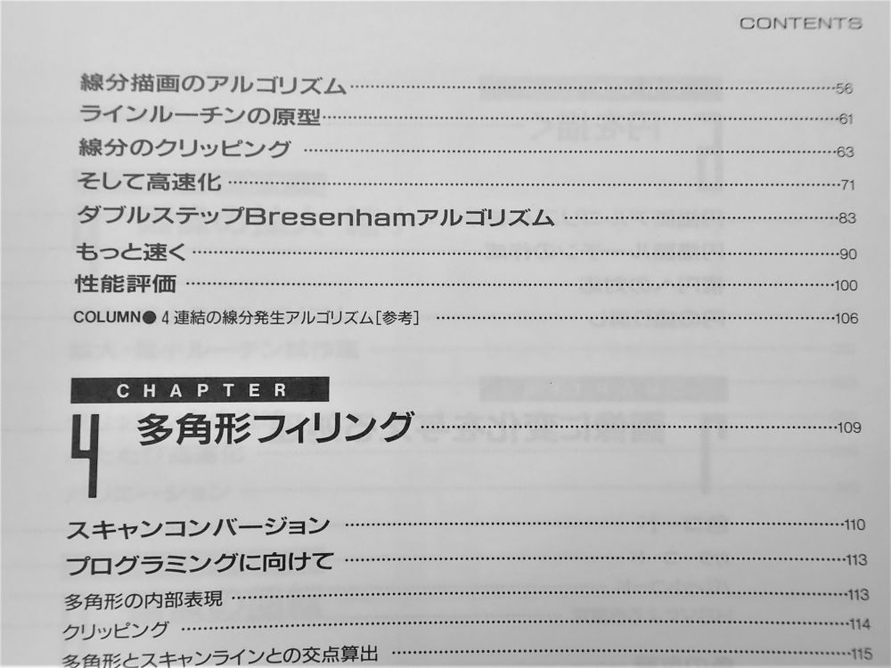
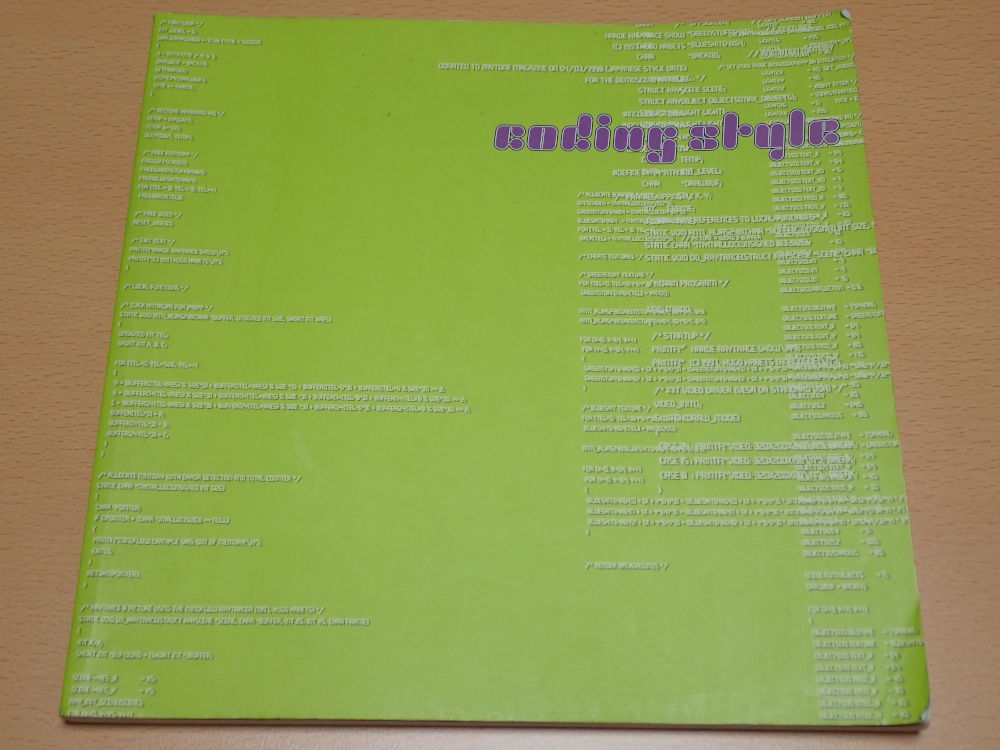
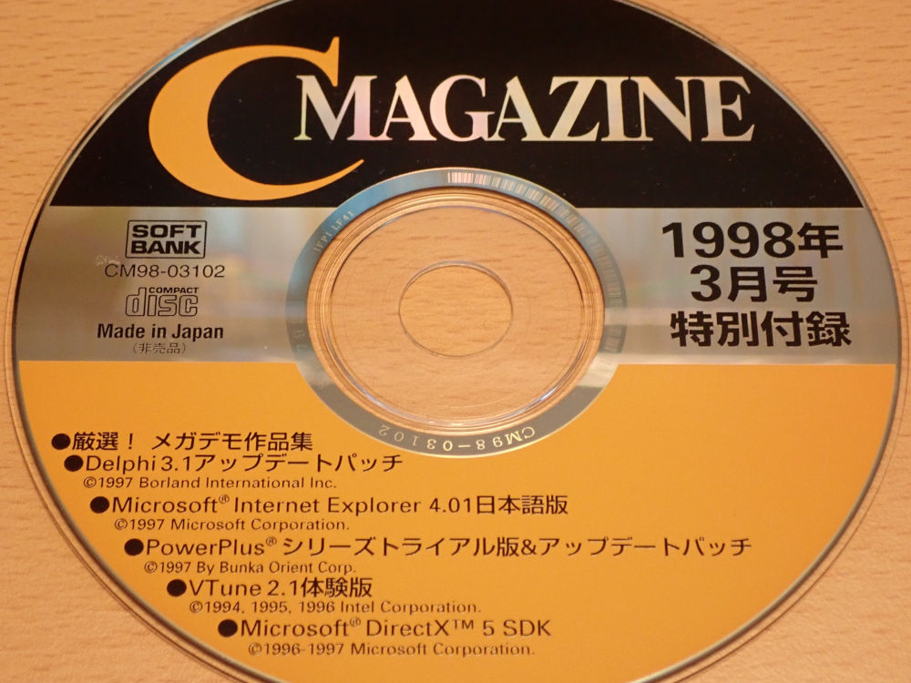

デモシーン発生以前の日本の状況
English version is here (translate by google).メガデモやデモシーンの概要については、 前記事 をご参照ください。
日本にデモシーンが定着したのは、 デモパーティが定期的に開催されるようになった 2001 年あたりからとされています。 ここではそれよりももっと前の、デモシーンが徐々に浸透していった頃の状況について書いてみます。 これを書いている私は歴史家ではないので、 時系列や定義などはあいまいな場合がありますがご了承ください。 推測に基づく内容は、断言を避ける表現を使っていきます。 私が見てきたものを中心に書いていますので、内容が偏りがちな点もご了承ください。
目次
-
Windows 普及以前（～1990 年代中頃まで）
- 1980 年代末に国内でリアルタイム 3D グラフィクスがブームに
- 3D グラフィクスはホビープログラミングにおける実装チャレンジの定番課題に
- 非リアルタイムな 3D レンダリングシステムの実装も盛んに行われた
- ディスクマガジンやミュージックディスクが同人ソフトとして作成された
- MSX 上では海外ソフトウェアとともにデモシーン文化が流入
- Amiga 輸入代行ショップ経由でメガデモが日本に流入
- Amiga のメガデモが X68000 ユーザーに衝撃を与える
- X68000 上で作成されたメガデモ
- panic データ、MASL データ
- Golden Weeds Project Japan
- 国産市販ゲームソフトに登場するメガデモ的要素
- 海外から輸入されたゲーム（ゲーム機）に含まれていたメガデモ成分
- Windows 普及以降（1990 年代後半～）
- インターネット普及以前、国内のホビープログラミング成果物はどこでリリースされたのか
- 日本にデモシーンが存在しなかった理由を考察
Windows 普及以前（～1990 年代中頃まで）
ざっくりと Windows95 発売以前の、 ガラパゴスな国産パソコンが強い勢力を保っていた時期を見ていきます。 インターネットはまだ普及していない時期です。 デモシーンという概念が全く認識されていない頃、 国内で 3D グラフィクスブームがあり、 そこに海外からデモ作品が流れ込んできます。- 1980 年代末に国内でリアルタイム 3D グラフィクスがブームに
-
1980 年代末、
ウイニングラン（1988 年 ナムコ）をきっかけに、
アーケードゲームの世界でリアルタイム 3D グラフィクスブームが起こります。
リアルタイム 3D のゲームは、ウイニングラン以前から沢山存在したのですが、
いずれも拡縮スプライトを使った疑似 3D によるものでした。
ポリゴンベースになったことが本作の大きな飛躍でした。
ウイニングラン（1988 年 ナムコ）
ポリゴンベースのリアルタイム 3D グラフィクス
同時期に国産パソコン上でも、 8-bit マシン上でリアルタイム 3D グラフィクスを実現した スタークルーザー（1988 年 アルシスソフトウェア） がリリースされています。
スタークルーザー（1988 年 アルシスソフトウェア） PC-8801 mk2SR 以降
Z80 系 CPU による 4MHz 動作（動画は PC-8801FH/MH 以降で 8MHz モード）
プログラマである 吉村功成 氏はこの他にも、
日本初のリアルタイム 3D ポリゴンゲームとされるプラズマラインなど、
多くの 3D ゲーム制作に関わられている。
- 3D グラフィクスはホビープログラミングにおける実装チャレンジの定番課題に
-
この当時のアーケードゲーム機は、
パソコンや家庭用ゲーム機と比べてはるかに高性能でした。
アーケードゲーム機の表現にどこまで迫れるか？は、
パソコンや家庭用ゲーム機にとってベンチマーク的な意味があり、
また同時にホビープログラミングにおける実装チャレンジの定番課題になっていました。
当時のパソコンには GPU 相当の機能が存在しなかったので、
3D グラフィクスはソフトウェアレンダリングで行う必要がありました。
様々な腕利きプログラマ達が、 様々な環境で、 各々のソフトウェアレンダラを実装していました。 プログラマの力量がダイレクトにパフォーマンスに反映されたので、 現在のようにパフォーマンス不足を GPU のせいにすることは出来ませんでした。 力量を示すには、ガチガチに最適化も入れなくてはならず、 実装はできるが、大変すぎてみんな死にそうになるという世界です。 いかに高速に座標変換を行うか、 いかに高速にラインやポリゴンを描くかを追求する最適化が盛んに行われました。
グラフィクス処理を得意とした国産パソコンの一つである SHARP X68000 は、 この時期とくに最適化が過熱した環境の一つでした。 グラフィクス処理の高速化に関する書籍や雑誌記事も存在しました。

書籍 X68000 マシン語プログラミング（1991 年 村田敏幸）の目次。
ライン描画の最適化について 50 ページも書かれており、当時の最適化の過熱っぷりが伺える。
- 非リアルタイムな 3D レンダリングシステムの実装も盛んに行われた
-
この頃から活発に活動していた
PROJECT TEAM DoGA
は、
「自主制作アニメ」の世界にコンピュータを持ち込み、
それまで困難とされた個人でのアニメーション制作を可能にしました。
当時は一般的なパソコンで CG アニメーションを作ることは技術的な課題が多くありました。
個人で制作したレンダラを利用した作品も多く存在し、技術で競う側面がありました。
第 1 回全日本 X68000 芸術祭 オープニングムービー （1991年 土田康司氏）
X68000 上で作成された有志による自作（オフライン）レンダラを利用
また、PROJECT TEAM DoGA は、この当時から CG アニメコンテスト というイベントを毎年開催しています。 多くの著名なクリエーターがこのコンテストを登竜門として利用してきました。 開催規模は大きく、エントリ作品は 1300 人が収容可能な大ホールで上映されました。
「彼女と彼女の猫」（1999 年 新海誠氏）
第 12 回 CG アニメコンテストグランプリ受賞
CG アニメコンテストは、 ストーリー性のある作品向けという印象がありますが、 当時のエントリ作品の中には、 作成者の自作レンダラの技術力をアピールする実験映像っぽいものや、 ちょっとメガデモっぽい雰囲気の作品もありました。
- ディスクマガジンやミュージックディスクが同人ソフトとして作成された
-
海外デモシーンでは、ディスクマガジンやミュージックディスクが重要な作品カテゴリとして存在します。
これらは、インターネットが無い時代の欧州で、
デモが各地に郵便小包で配布される際に同梱されていたものです。
ディスクマガジンもミュージックディスクも、音楽を聴きながら記事を読むスタイルのもので、
両者は似たようなものです。
日本では、ディスクマガジンはパソコン用メディアを用いた雑誌として定着していました。 X68000 を対象とした「電脳倶楽部」（1988 年 5 月創刊）、 MSX と PC98 を対象とした「ディスクステーション」（MSX 版が 1988 年 7 月、PC98 版が 1990 年 10 月創刊）、 MSX を対象とした「MSX・FAN」（1991 年 9 月創刊）、 ファミコンを対象とした「謎のマガジンディスク ナゾラーランド」（1987 年 2 月創刊） 等がありました。 これを模倣する形で、 同人ソフトの世界でも、1990年代初頭ごろからディスクマガジンが盛んに作成されました。
- MSX 上では海外ソフトウェアとともにデモシーン文化が流入
-
当時の国内で普及していたパソコンは、大半が国産のものでした。
国産マシン上に、海外からのソフトウェアが輸入されてくることはほとんどありませんでした。
そのような中、唯一異なる状況に置かれていたのが MSX でした。
MSX は、1983 年にマイクロソフトとアスキーが提唱した共通規格の名称です。
共通規格なので、海外のソフトウェアが動きます。
そのため海外デモシーンとの接触がかなり早い時期からあったようです。
当時の状況についてはまとまった記録はありません。
ここでは、google で掘って出てくる程度のことをまとめてみます。
1990 年初頭、「MSX CLUB GHQ」というサークル（？）が海外からの MSX 関連ソフトウェアを日本に持ち込み、 ソフトウェアベンダー TAKERU 上で販売するパブリッシャ活動を行っていました。 TAKERU は、当時のソフトウェア自動販売機で、お金を入れるとフロッピーディスクが出てくるというものです。 当時の MSX 専門雑誌である MSX・FAN 上には、internationalization [国際化(kokusaika)] という海外の MSX のゲーム等を紹介するコーナーがあり、MSX CLUB GHQ により持ち込まれたゲームソフトが紹介されていました。 MSX CLUB GHQ はこのほか、「侍円盤」（1992 年～）というディスクマガジンを国内外で発行していて、 そこには海外の MSX デモチーム FLYING BYTES の PSG Tracker やイントロ（簡単なデモ）が収録されていました。補足ですが、Tracker とは、音楽を作成するツールのことです。 当時日本では Tracker はマイナーで、 MML と呼ばれる言語をテキストエディタで書くスタイルが主流でした。
gamasutra 上に、 当時オランダのインディゲーム制作チームである ANMA (AndreLigthart & MartijnMaatjens) のゲームを、 MSX CLUB GHQ が日本に持ち込んだ経緯がわかるインタビュー記事 The Story Of ANMA: Two Schoolboys And A Game Development Dream が掲載されています。 TAKERU の明細書の実物コピーもあり、そこに MSX CLUB GHQ の名前が確認できます。 明細書の日付は「平成5年（1993 年）3月度」となっています。
MSX 上で起きていた海外ソフトウェアの流入において、主役はゲームソフトでした。 海外のデモシーン文化が積極的に日本で拡散されたというよりは、 海外から持ち込まれたものの中に、デモシーン文化由来のものが一部含まれていた、 と言った方が近いかもしれません。
- Amiga 輸入代行ショップ経由でメガデモが日本に流入
-
Amiga は、1985 年にコモドール社より発売されたホビー向けパソコンです。
Amiga は、CPU にモトローラ MC68000 が採用されていて、
欧州を中心に盛んにメガデモが作成されました。

Amiga（Amiga 500、1987 年リリースのモデル）
（画像は wikipedia から抜粋 CC 表示-継承 2.5 ）
日本では、Amiga を扱った最初の書籍「AMIGA PARADISE」が 1989 年に刊行されました。 著者の 桃園隆夫 氏は、 フジテレビの科学情報番組 EINSTEIN（1990 年）や ウゴウゴルーガ（1992年～1994年）で Amiga による CG パートを担当されました。 なかでもウゴウゴルーガは、 出演者と CG キャラクターをリアルタイムに合成し対話させるなど、 当時としては先進的な様々な手法が取り入れられたことで知られています。
桃園氏は、Amiga の伝道師とも言える存在で、 音楽制作系をはじめ様々な雑誌上にて Amiga 関連記事を執筆されていた他、 Amiga を積極的に扱うショップ「パイナップル 68000」を経営されていました。 このショップは東京お茶の水の楽器街にあり、 Amiga は DTM 機器としても使えるパソコンとして販売されていました。 この当時の日本テレビ業界界隈のアーティストには、Amiga を所有する方が多くいらっしゃいました。
ウゴウゴルーガの制作に関わられた（故）秋元きつね氏 の blog ＥＩＮＳＴＥＩＮスタッフ と commodore AMIGA に当時の状況が詳しく書かれています。 それによると、 1992～1993 年頃（詳細が不明）、すでに Amiga 上でメガデモの鑑賞が行われていて、 メガデモを素材とした VJ のようなことを行ってる方々もいらっしゃったとのことです。
ウゴウゴルーガの人気コーナー「しかと」
Amiga で作成されている
Amiga を扱うショップは、秋葉原にも複数存在しました。 ここでは、その一つである「タイゲン貿易」と、 タイゲン貿易から派生したショップについて触れます。 タイゲン貿易は、 秋葉原の秋月電子の通りにある雑居ビルの一室に店を構えていた、1993 年春開業の輸入代行ショップです。 この時期の秋葉原の雑居ビルには（2020 年）現在のようなオタク系ショップはまだなく、 違法スレスレな商品を取り扱うショップや某宗教団体直営の PC ショップなどが存在し、 アンダーグラウンドな空気が漂っていました。
タイゲン貿易は、開業当初は Amiga をメインに扱っていて、 イギリスの Amiga 系メガデモディストリビューターである NBA や 17BIT が配布していたデモを店頭でコピーするサービスを行っていました。 その後このショップは、 スーパーファミコンの ROM カートリッジをフロッピーディスクにコピーして複製と直接起動を可能にする機器など、 ヤバ目な商品を扱い一躍有名になっていきましたが、1995 年末に突如閉店してしまいました。夜逃げだったと言われています。
タイゲン貿易の店長であった 荻野 宏 氏は、 閉店騒動前に独立し秋葉原の隣駅である御徒町に「システムコンバック」という Amiga 専門ショップを開かれていました。 このショップは、Amiga に特化していた頃のタイゲン貿易がそのまま引き継がれていて、 メガデモを店頭でコピーするサービスも行われていました。 システムコンバックは最盛期には 3 店舗存在したのですが、Amiga 人気の衰退とともに規模を縮小していきました。 その後「シスコンリミッテッド」と名称を変え、下北沢で Amiga 専門店を経営されていました。 web archive 上で、その名残を確認することができます。web archive : for your beautiful Amiga life Systcom Limited シスコンリミテッド
シスコンリミッテッドの物理的な名残である Amiga 看板が、（2020 年）現在も下北沢に存在しています。google street view : 下北沢の Amiga 看板
荻野 宏 氏のインタビュー :AMIGAが売れなくても、いつもニコニコな荻野社長！！
- Amiga のメガデモが X68000 ユーザーに衝撃を与える
-
1990年代前半、日本国内では Amiga 同様 MC68000 を搭載したホビーパソコンである SHARP X68000 が黄金期を迎えていました。
ユーザーの誰もが X68000 こそ至高であると信じて疑わないような状況でした。
そのような中 X68000 ユーザーの間で、
海外パソコンの Amiga はもっとすごいらしいぞという噂話が、ちょくちょく飛び交っていました。
X68000 環境ハンドブック（1989 年 12 月 吉沢正敏/市原昌文）のコラム。
「Macintosh が至高の 68000 パソコンで、Amiga が究極の 68000 パソコンである。」 と書かれている。
じゃあ X68000 は何なのだ？
「Amiga プログラマー達の恐ろしいパワー」とは一体？
様々な国産パソコンが販売されていた当時の状況下、 わざわざ日本語対応していない、ソフトも情報も入手しづらい海外パソコンを入手する人はほとんど居ませんでした。 国産パソコンユーザーにとっての Amiga の印象は「謎のパソコン」でした。
そして 1993 年頃、海外のデモシーンは全盛期とも言える状況を迎えます。 ここでリリースされたデモは、日本国内にも届いていました。 中でも X68000 でリアルタイム 3D グラフィクスを研究していたプログラマに取って衝撃的だったのは、Amiga のメガデモ群でした。
9 Fingers (1993 年 Spaceballs)
Amiga 上でフロッピーディスク上（2枚）にどれだけの映像を詰め込めるかを追求した作品。
わずか 7.16 MHz の CPU と DMA のみでリアルタイム動作を実現している。
動画圧縮も凄いが、衝撃的だったのは動画が CUBE にテクスチャマップされるシーン。
その衝撃は、海外デモシーンで賞賛の言葉としてよく見かける "mind-blowing" そのものでした。 これが Amiga なのか・・・！と、 打ちのめされた X68000 ユーザーはさらなるリアルタイム 3D グラフィクス追求の道へ進むことになりました。
Amiga のメガデモは、 図らずも X68000 の苦手な部分をえぐり出すような内容になっていました。 アーケードゲームの移植という用途では、 X68000 は Amiga よりも遥かに高性能だったのですが、 メガデモ的なことをやろうとすると、Amiga に軍配が上がりました。ここで、状況を把握しやすくするため、Amiga と X68000 のハードウェアの違いを補足しておきます。
このあたりの経緯を経験した X68000 ユーザーに取って、 Amiga はリスペクトはするけれど宿敵 という認識です。 現在のデモパーティでも Amiga は人気が高く、 パーティ会場では Amiga ユーザー達による Amiga コール （Amigaaaaa!!! と誰かが叫ぶと、別の人もそれに応じる） が行われるのですが、 それに応じる X68000 ユーザーは少ないです （これは、Amiga を宿敵と認識している Atari ST ユーザー等も、恐らく同様だと思われます）。
X68000 はグラフィクスに強いパソコンでしたが、 （1980 年代）当時のアーケードゲームレベルのスプライト表示機能を搭載していた一方、 リアルタイム 3D グラフィクスを想定した機能を持ちませんでした。 X68000 の VRAM は、 どのような画面モードでも 16bit per pixel でアクセスする仕組みになっていて、 扱いやすい反面で実行速度が犠牲になっていました。
一方 Amiga は、DMA を使った高速なグラフィクス描画を前面に押し出していました。 VRAM to VRAM 間の転送はバスをショートカットして 4 倍速で行われ、 しかも CPU アクセスの裏で走行可能とのことです。 DMA で横一ラインのピクセルを同一色で高速に塗りつぶすことができれば、 あとは応用次第でポリゴンが描画でき、リアルタイム 3D グラフィクスが実現可能であるということが、 Amiga の根底にある設計思想になっています。
X68000 で Amiga と同様のことを行うと、 DMA 転送中は CPU のメモリアクセスが止まる、 16bit per pixel のため描画速度が遅い、 グラフィクス転送用の高速パスを持たないので遅い等々の障壁があり、 リアルタイムポリゴン描画は不可能というのが共通の認識でした。
またサウンド面でも大きな差があります。 X68000 は、当時のアーケードゲーム機で広く採用されたものと同等の FM 音源チップを搭載していました。 しかし、サンプリング音の再生は ADPCM が 1 チャンネルのみで、 しかも周波数固定のためせいぜい打楽器ぐらいにしか使えませんでした。 サウンド出力が ADPCM のみサポートという点がとても厄介な問題でした。 ソフトウェア的に複数チャンネルの音をミキシングしたとしても、 出力段階で ADPCM にエンコードしなければならず、 これは CPU に相当な負担を強いる処理になっていました。 X68000 には、 この問題を解決する PCM8（江藤啓氏）と呼ばれる 8 チャンネルリアルタイム音声出力を可能にするドライバが存在しました。 PCM8 は X68000 の歴史上でも最も高度な最適化が適用されたソフトの一つですが、 それでも周波数・音量固定の 8 チャンネルミキシングで 10Mhz の CPU パワーの大半を使い尽くしていました。 一方 Amiga は、周波数・音量がリニアに調整できる非圧縮サンプリング音の 4 チャンネル同時再生をハードウェア機能としてサポートしており、 サンプリング音を使って楽曲を作ることが可能でした。
ちなみに余談ですが、X68000 上でのリアルタイムポリゴン描画は、 後に様々な困難を乗り越えて達成されています。 Amiga 同様、「X68000 プログラマー達の恐ろしいパワー」もまた存在したという事実をここで触れておきます。
Geograph Seal X68000 (1994 年 EXACT)
DMA が描画に使えないので、68000（映像は 16Mhz）単体でソフトウェアレンダリングを行っている。
高速化のためフレームバッファクリアをパレットチェンジで行う都合、ポリゴンは 32 色しか使えていない。
それでもディザリングで色数を稼ぎ、フォグ効果で砂嵐の濃淡まで表現している。
後にこの制作チームは Play Station 上で「ジャンピングフラッシュ!」をリリースする。
- X68000 上で作成されたメガデモ
-
この時期に、SHARP X68000 上で作成されたメガデモが存在します。
1994 年に CraftworkJapan というチームが作成した X-Demo という作品です。
（資料提供
@aka_obi
さん）
X68000 の X-Demo (1994 年 CraftworkJapan)
X-Demo シリーズは 5 作存在する。
ちなみに peke-demo（ぺけデモ）と読む。
X-Demo は、現時点で確認できている最も古い日本のメガデモです。 これより古いものをご存じの方がいらっしゃいましたら是非ご連絡ください。
一見してわかることは、 Amiga のデモチーム Spaceballs の作品に対するリスペクトの存在です。 Amiga のメガデモに触発されたことは間違いなさそうです。
- panic データ、MASL データ
-
SHARP X68000 には、panic データと呼ばれる動画フォーマットが存在しました。
panic データは動画フォーマットと位置付けられていますが、
内部にネイティブコードを含ませることができるので、ほぼ実行ファイルです。
当時 X68000 上で、どれだけすごい panic データが作れるかという競争が起きました。
こちらは、「聖まりあんぬ BBS」の宣伝用に作られた panic データ（1994 年）です。 BBS とは、掲示板機能のみを持つサーバーに電話回線で直結して情報交換するという、インターネット普及前のパソコン通信の仕組みです。 この panic データは、当時その BBS にアップロードされていた画像データなどをつなぎ合わせて作成されています。 落書きっぽい絵で圧縮率を稼いだり、 バックグラウンドで画像のデコードを行ったり、 技術面でも頑張ったメガデモ的な作品となっています。 ファイルサイズは 1.66MB です。
X68000 聖まりあんぬ BBS CM（1994 年）
ところ変わればデモ変わるという観点で、ぜひ 9 Fingers と比較してみてください。
この panic データを作成された方々の、当時の状況が伺える貴重なインタビュー記事があります。「日本で唯一、グーグルに勝った男」“元祖ギーク”起業家が選んだ、オンリーワンの戦い方
聖まりあんぬ BBS 主催者の自宅は「鴨邸」と呼ばれ、若いギーク達が集まったとのことです。 彼らの元には、IBM やマイクロソフト、日本のテレビ局など、各方面から助けを求める人達が訪問したとのことです。余談ですが、この BBS 界隈で使われたネットスラングは「鴨語」と呼ばれていました。 鴨語には、今日のインターネットで広く使われるスラングが多く含まれていました。 その中でも最も有名なスラングとして「萌え」が挙げられます。 「萌え」の由来は鴨語以前にさかのぼることができず、鴨語を起源とする説が有力です。
panic と同様のフォーマットとして、PC-98 発祥の MASL データ（kuni-soft 1994年2月6日～）があります。 MASL データは panic データとは異なり、ネイティブコードを含まないため、 特殊なレンダラは実装できないかわりに移植性が高く、様々な環境でデコーダが提供されました。
- Golden Weeds Project Japan
-
1995 年初頭に、日本で PC/AT 互換機上でメガデモを作成していた Golden Weeds Project Japan というチームが存在します。
このチームは独自のデモを作成していただけでなく、
DOS/V magazine や、C Magazine などの国内雑誌のメガデモ紹介記事、書籍「メガデモを作ろう」などを執筆されています。
メガデモという言葉を日本に定着させるきっかけとなりました。
Super Reality（1995 年 Golden Weeds Project）
Super Reality のリリースは 1995 年 3 月です。※ 作成者による解説では 日本で最初のメガデモとありますが、 時系列的には先に紹介した X-Demo の方が先にリリースされています。 また同記事中の「Demo for Windows」がそれよりも古い 1993 年 3 月とありますが、正しくは 1998 年 3 月です。
- 国産市販ゲームソフトに登場するメガデモ的要素
-
ゲーム内の OP や ED デモにメガデモが使われているケースがありました。
国内ソフトメーカーの CYBERTECH CUSTOM からリリースされたゲーム CARAT（PC-9801 版が 1992 年、X68000 版が 1993 年）では、 メガデモ・イントロ仕立ての ED デモが用意されていました。
X68000 版 CARAT エンディング（1993 年 CYBERTECH CUSTOM）
前年の NEC PC-9801 版よりも内容が強化されている。
同じく CYBERTECH CUSTOM から 1996 年にリリースされた NEC PC-9801 向けのゲームである Star Platinum では、 エンドロールにはっきりと "mega-demo ending staff roll" と出てきます。
NEC PC-9801 Star Platinum (1996 年 CYBERTECH CUSTOM)
16 色グラフィクスの限界に挑んだ作品として知られている。
CYBERTECH CUSTOM では、当時社内でメガデモ鑑賞会が行われていたと伺っています。 このような鑑賞会は、他にも様々なコミュニティで開催されていたようですが、時系列がわかる記録がほとんどありません。 CARAT エンディングデモは、 少なくとも 1993 年以前には海外のデモ・イントロが国内に出回っていたことを示す重要な証拠です。
- 海外から輸入されたゲーム（ゲーム機）に含まれていたメガデモ成分
-
一部の海外のゲームソフトに、
メガデモ文化圏のデザインが含まれていて、
それが国内に輸入されてくる例がありました。
アタリが 1993 年（日本は 1994 年）に発売したゲーム機である Atari Jaguar は、 CPU に MC68000 が使われており、 Amiga や Atari ST で培われたエフェクトやデザインがそのまま搭載されたゲームが多数リリースされていて、 それらは国内にも輸入されていました。 なかでも 2000 シリーズ（Tempest 2000、Defender 2000）は、 国内でもとても高く評価されました。
Tempest 2000（1994年 Llamasoft）
音源は 4ch MOD フォーマット で作成されている。
ちなみに Atari Jaguar は日本では 3000 台しか売れなかった。
2000 シリーズのプログラマである Jeff Minter 氏は、 後発の Atari Jaguar CD に搭載されていた Virtual Light Machine（VLM）というサウンドビジュアライザの実装も担当しています。
Virtual Light Machine （1995年 Jeff Minter）
（2020 年）現在の水準で見ても見劣りしない。
Atari Jaguar CD の国内販売数は、さらに 1/10 の 300 台だったと言われている。
SEGA のメガドライブは、海外では GENESIS という名前で販売されていて、大きなシェアを獲得していました。 当時のメガドライブの日本市場には、海外から輸入されたゲームが流通していて、 その中にはメガデモっぽいデザインのものが含まれていました。
Vectorman（1995年 BlueSky Software）
メガデモのエフェクトのカテゴリに「ベクターボール」と呼ばれる手法がある。
Vectorman は、ベクターボールを利用した多関節キャラクタによるアクションゲーム。
メガドライブの CPU も、Amiga や Atari ST と同じく MC68000 が使われている。
Windows 普及以降（1990 年代後半～）
続いて、1990 年代後半あたりからの状況を見ていきます。 Windows95 発売（日本版は 1995 年 11 月 23 日）に伴い、 ガラパゴスな国産パソコンが現在のような PC に置き換えられていきました。 機種ごとの互換性の壁はなくなり、ネット上では技術情報のやり取りが活発化していました。- 日本でもデモが広く知られるようになった
-
1990 年代後半に入ると、
国内の雑誌にメガデモ関連記事が多く掲載されるようになりました。
それまで一部界隈でのみ知られていたメガデモが、広く認知されるようになりました。
このあたりの時系列は、
全日本波形平和会（略して 波平会 もしくは N.H.K.）の Odaki さんが作成されているリスト
に詳しくまとまっています。
パソコンショップの店頭では、 PC のスペックを示すためのデモとして、 メガデモが再生されていました。
- 日本初のデモコンポ HOLICS'96
-
日本国内向けのメガデモに関する話題を扱う、
DemoholicML というメーリングリストが、
1996 年 2 月から運営されていました。
このメーリングリストでは、HOLICS'96 という日本初のデモコンポが開催されていました。
HOLICS'96 は、作品のエントリや投票をオンラインで行う形式でした。
DemoholicML および HOLICS'96 については、 web archive 上でその痕跡を確認することができます。web archive : DemoholicML 主催 HOLICS'96
このメーリングリストには、 先の X-Demo を作成した CraftworkJapan の方々や、 DOS デモを作成されていた方々、 海外のデモパーティを実際に訪問された方々、 MOD フォーマット 等に精通した方々など、 この時期のコアなデモシーン愛好家が集結していました。
HOLICS'96 にて、 実際にパーティ形式のイベントは開催されたかどうかは、 残念ながら詳細な記録がなく不明です。 記録が無いことから大規模なものは開催されなかったと推測されます。
- 日本でもデモ由来エフェクトの実装が盛んにおこなわれた
-
この時期国内には、
デモで使われる定番エフェクトを自前実装したプログラムを掲載しているサイトが沢山存在しました。
単に実装を技術的に解説しているのではなく、進捗をアピールして競争するような形です。
こういった動きは（2020 年）現在以上に活発でした。
当時 GPU の普及も始まっていましたが、 海外デモシーンでは「GPU 利用＝妥協」という認識があって、 ソフトウェアレンダリング（CPU のみによる描画）による最適化競争が展開されていました。 国内サイトでも、 デモシーン関連サイトで扱われる技術記事は、 ソフトウェアレンダリングに関するものがほとんどでした。
1997 年、インテル X86 プロセッサに新たに MMX 命令と呼ばれる命令セットが追加されました。 これらはマルチメディア（＝グラフィクス・サウンド）向けの命令セットになっており、 従来のレガシーな 486 命令セットでは困難とされた、 ピクセルの飽和演算やαブレンド処理などを効率的に実行可能でした。 当時、インテル X86 プロセッサは長らく命令セットの拡張が行われておらず、 またユーザー側も何らかの特定用途向けの命令セットが拡張されるということは想像すらできない状況でした。 そのようななかで出てきた MMX 命令はとても衝撃的な命令セットでした。 MMX 命令を詳細に解説した技術書も多数刊行され、 それらを活用したアセンブラプログラミングがブームになっていました。
- デモ作品は個人の web サイト上で公開された
-
この時期、すでに独自のデモを作成されている方々もいらっしゃいましたが、
受け皿となる本格的なデモパーティはまだ存在しなかったため、
それらの作品は個人の web サイト上で公開されていました。
OTOKO-UMI - Copyright (C) 1996 maru-ike
このデモの作者である池内 英夫氏は、
この当時のメガデモの技術面を解説したサイトを運営されていた他、
雑誌上のメガデモ関連記事を執筆されていました。
- メガデモ関連記事、書籍、CD-ROM
-
「メガデモを作ろう」（1997 年 SOFTBANK BOOKS）という技術書や、
「coding style」（1998 年 zavtone magazine）というデモシーンの文化的側面を取材した書籍が刊行されました。
プログラミング専門誌である C マガジンでも、
メガデモの技術的な内容を扱った記事が掲載されました。
 
左 : coding style。一見、技術系の書籍っぽいですが、中身は写真とインタビュー記事のみで構成されています。
右 : C Magazine 1998 年 3 月号 特集記事｢メガデモ---驚異のコーディング世界｣。 残念ながら手元には付録 CD しか残っていませんでした。
秋葉原では、かつてデモシーンの中心的な Web サイトであった Hornet のアーカイブを収録した公式 CDROM（HORNET UNDERGROUND vol.1~2）や、 MOD データとそのデータフォーマットに関する資料を収録した CDROM を購入することが可能でした。
当時秋葉原に存在した LASER5（輸入モノに強かったショップ）で入手したもの
左 : HORNET UNDERGROUND（主要パーティでリリースされたデモが収録されている）
右 : Ultimate Music Sound Collection（膨大な量の MOD データと技術資料が収録されている）
- ２ちゃんねる上ではデモに関するスレッドが盛況だった
-
SNS のようなものが無かった当時、
ネット上で特定ジャンルの話題のため集まれる場所と言うと
２ちゃんねるぐらいしかありませんでした。
２ちゃんねる上にはメガデモに関するスレッドがあり、とても盛況でした。
これは後の２ちゃんねる発祥のオンラインデモパーティである 2chparty に繋がっていきます。
２ちゃんねるは匿名掲示板であり、
スレッド上の書き込み番号を ID のようにして名乗る習慣があります。
日本のデモシーナにはこの頃の ID で活動されている方々がいらっしゃいます。
デモ・デモシーンについてまとめた当時の国内個人サイト群はほどんど失われている一方で、 ２ちゃんねるの過去ログは良く保守されていて、現在でも参照可能です。
＃＃＃メガデモを語る＃＃＃ （2001/01/16）
過去ログから、 「これだけのデモ好きが集まっているのだから、日本でもデモパーティを開催してはどうか？」 と、パーティ開催熱が高まっていく様子が確認できます。
インターネット普及以前、国内のホビープログラミング成果物はどこでリリースされたのか
話は再び 1990 年代前半あたりに戻ります。- コミケでメガデモが売られている！
-
インターネットの無い当時、
個人が何か作品を広く配布したい場合、コミケなどの展示即売会が利用されました。
1990 年時点でコミケの推定参加者数は 25 万人
に達していて、作品を広くリリースする場としては適していました。
先ほど 1990 年代前半の作品として紹介した日本のメガデモ「X-Demo」や ディスクマガジン・ミュージックディスクなどは、 いずれもコミケなどの展示即売会で同人ソフトとしてリリースされていました。 日本人的感覚でいうと、コミケにはその時点の大抵のサブカルが集結するので、これは不思議なことではありません。 しかし海外デモシーンの認識からすると、 「メガデモが売られている」 ということは不思議な感じで捉えられるのではないかと思います。
当時のコミケ会場はビッグサイトではなく晴海会場（東京国際見本市会場）だった。
晴海会場時代のコミケは、商業色がなく学祭ノリだった。
写真は徹夜組がコスプレしたまま収容されたC館（1995 年 撮影）。
（画像は wikipedia から抜粋 CC 表示-継承 3.0 ）
- コンピュータを持ち寄る交流の場も展示即売会上で発生
-
コミケは電源確保ができないので、パソコンの持ち込みができないという問題がありました。
これに応える形で、コンピュータ関連に特化した「パソケ（パソケット）」という電源確保が可能なイベントも各地で開催されました。
パソケは展示即売会ですが、 何かを売ることが目的でなく、ただ自慢のパソコン環境を見せることや 仲間と会うことを目的に参加している人たちも多くいました。 もし海外デモシーンの方々がこの光景を見たら、恐らく「パーティ」だと認識したでしょう。 ルーツも目的も形式も全く異なりますが、 海外デモパーティと似た光景が、同じころの国内イベントでも発生していたのは面白いです。 ファイル交換パーティから発展しても、展示即売会から発展しても、 行きつく先はコンピュータを持ち寄っての交流会になるわけです。
パソケのような展示即売会で、 もし余興としてコンペティションが開催されていたら、 デモコンポのようなものに発展していた可能性は考えられます。 しかし残念ながらそのようなことは起きませんでした。 パソケは最後まで展示即売会スタイルを逸脱することなく終了しました。 現在も続く末裔のイベントも、展示即売会スタイルを踏襲しています。
マイコン・インフィニット☆PRO-68K(MI68)
秋葉原で定期的に開催されるレトロ PC 中心のイベント。
パソケに近い雰囲気を今に引き継いでいる。
展示即売会には、デモパーティで行われる投票のような評価システムや競争は存在しません。 しかしながら、デモパーティと似たような側面があります。 展示即売会に作品を出す側として参加すると、 次回はもっと良いモノを出せるように頑張ろうというモチベーションの高まり感じることができます。 この感覚は、デモパーティで作品をリリースした時のそれと大差ありません。 強い影響力を持つサークルはリスペクトの対象であり、目標になります。 評価システムはなくても、緩やかな競争状態が常に発生しています。 デモパーティにおける評価は投票ベースのため評価軸が固定されてしまいがちですが、 展示即売会ではそのようなことはなく、 様々な方向性に突き抜けた作品が集まり、 それぞれの方向性で評価されています。
- 展示即売会がもたらした副作用
-
作品リリースの場として展示即売会が選択されたことが、
作品の内容やその後の行方に影響を与えることになりました。
- 作品の大半はゲームソフト
-
作品がリリースされる環境は、そこで出てくる作品にも影響を与えます。
展示即売会では、お客さんはお金を払って作品を入手します。
お客さん側は、払った額に見合うだけ楽しませて欲しいと考えています。
作る側もそれを意識して、
単に技術力の高さを見せつけることが目的の作品であっても、
最低限ゲームとしての体裁を持たせたうえでリリースされることがほとんどでした。
そのような事情から、メガデモのようなもの（技術特化、非ゲーム）はほとんど存在しませんでした。
おしおきキライ！2（PC-98 対応、1992 年 ほんわかソフト）
技術デモとしても凄いが、ゲームとしても成立している例。
9 Fingers の踊るお姉さんに対抗できるのは、この踊る 唐沢＆金井 両氏しかいない。
これを作成された方は、後にコナミに入社し、魂斗羅ザ・ハードコア（1994年）の
似たようなシチュエーションのアクションシーン を実装されています。
- アーカイブされない
-
コミケなどの展示即売会では、
歴史上重要な作品でもわずか数百コピーしか配布されないといったことが起こりがちです（展示即売会では数百コピー売れたらかなりのものですが）。
そしてそのような作品が、
どこかにアーカイブ（未来に伝達することを目的に収集・保存）されるかというと、そうではありません。
作品を売った側としても、 お客さんからお金を頂いて売ったものだから、後から無料で配布することには抵抗があります。 作品を買った側としても、 売られていたものだから許可なくコピーすることはできないと考えます。 その結果、コミケなどの展示即売会でリリースされた作品群は、 アーカイブされることなく死蔵状態に陥りがちです。
この状況は、海外デモシーンとは対照的です。 海外デモシーンでは、リリースされた作品を積極的にアーカイブする習慣があります。 アーカイブに収録の際、原作者に許諾を取るということはめったに行われません。 デモを郵便小包で各国に拡散していた頃の慣習がそのまま引き継がれていて、 作品のコピーを配布することや、アーカイブ収録に協力することは無条件に良いこととされています （ pouet 等のアーカイブサイトでは、アーカイブ収録に貢献すると、ユーザーのスコアが上がる ）。 その結果、海外デモシーンの過去作品を調べることは比較的容易です。 一方で日本はというと、全く記録が残されていないので、過去作品を調べることは考古学のような状態になります。
- 読者投稿プログラムを掲載していたプログラミング雑誌
-
ホビープログラミング成果物のリリース先として、
コンピュータプログラミング雑誌も利用されました。
当時、読者投稿プログラムを掲載する雑誌として、 様々な機種のゲームを掲載していた「マイコンベーシックマガジン」や、 MSX のみを対象とした「MSX・FAN」等がありました。 その多くが、ゲームプログラムの投稿に特化したものでした。 一つのプログラムは数ページの紙面に掲載可能な程度の短いもので、 BASIC 言語で書かれている必要がありました。
一部のプログラマは、 これらの雑誌にマシン語（今で言うネイティブコード）で記述した高度なゲームを、 BASIC の DATA 文（バイナリを直接テキスト化したもの）に変換して投稿していて、 その内容で激しい競争を展開していました。
【1988年4月号ベーマガ掲載作品】N-TYPE【PC-8001】by Bug太郎氏
PC-8001 で動くのも凄いが、少ない誌面に掲載されたプログラムに
3ステージ分のゲームとエンディングデモが入っているのは凄い
MSX・FAN では、マイコンベーシックマガジンよりも長いプログラムが投稿可能だったので、 非常に高度なゲームが多数掲載されていました。
「激走」三部作 by 米屋のチャチャチャ氏（MSX1 '89/3 '90/11 '91/11）
MSX・FAN 上でさらに凄かったのは、1 画面プログラムコーナーです。 これは、プログラムリストの表示結果がモニタの 1 画面以内に収まらなければならないという制約の中で作られた、 小さなゲームプログラムを扱うコーナーです。 このコーナーに投稿されていたゲーム群は、 単にプログラムコードを minify（短く）しただけではなく、 ハードウェアを特殊な方法で利用したものが多くありました。 短いにも関わらず、 MSX のプログラミングに精通している人が見ても、 一見して何が起きているかわからないほど高度で、 しかもゲームとしても成立しているという、 変態的なプログラムが多数掲載されていました。
デモシーン文化で例えるなら、 イントロぐらいの規模のプログラムが多数エントリされるデモコンポが、 毎月しかも複数の雑誌上で開催されているような状況でした。
日本にデモシーンが存在しなかった理由を考察
日本初の本格的なデモパーティは、2001 年から開催されたオンラインのコンペティションである 2chparty とされています。 日本にデモシーンが定着したのは、おおむねこの時点からとされています。 ゲームやコンピュータが沢山あり、 ホビープログラミングも活発に行われていた当時の日本で、 それまでなぜデモパーティやデモシーンが存在しなかったのか？は、 この界隈では解釈の分かれる謎の一つです。 ここではその理由について考えてみたいと思います。- そもそも海外のデモシーンはどのように発生したのか？
-
日本のことを考えるのに先立って、
まず欧州のデモシーンはどのように発生したのか？
を整理しておきます。
- 海外のホームコンピュータ上でクラッキングが流行
-
海外では Commodore 64（1982年発売）などのホームコンピュータがゲーム機としての役割を兼ねていて、爆発的なシェアを獲得していました。
ホームコンピュータ上ではゲームを遊ぶだけでなく、ホビープログラミング、市販ソフトの音楽データ吸出しやクラッキング
（コピープロテクトを解除し、違法にコピーできる状態にすること）
などが盛んに行われました。
- とくに共産主義体制下にあった国々では、正規の手段でのソフトウェア入手が困難だった
-
共産主義体制下に置かれていて、
正規の手段でのソフトウェア入手が困難だった国々では、
クラッキングはとても盛んに行われていました。
その名残のためか、共産圏・元共産圏の国々は現在のデモシーンでも強い勢力を保っています。
このあたり、なんでも買えた日本とは随分と事情が異なります。
- LAN パーティからデモパーティに発展
-
クラッキングしたソフトをコピーするため LAN パーティが開かれました。
これが次第に大規模化していき、後のデモパーティにつながっていきました。
- 日本の主要ゲーム機はホームコンピュータではなかった
-
日本の主要なゲーム機は、Commodore 64 のようなホームコンピュータではなく、据え置きゲーム機（ファミコン等）でした。
このことは、日本に海外のようなクラッキング文化が発生する機会を与えない要因の一つになったと言えそうです。
海外のホームコンピュータであり定番ゲーム機だった Commodore 64。
キーボード付きでプログラミングが可能。
（画像は wikipedia から抜粋 Public Domain）
余談ですが、ファミコンにも 当時北米向けに Commodore 64 対抗を意識したと考えられる Advanced Video System というホームコンピュータ仕様のプランがありました。 これは同時期の ファミリーベーシック V3 と同等のシステムと考えられます。 ファミリーベーシックはホームコンピュータとして十分な仕様ではなく、売上も良くはありませんでした。 Advanced Video System はキャンセルになってしまいました。
.jpg)
海外向けファミコンのプロトタイプ Advanced Video System。
残念ながらキャンセルになりキーボード等を持たない NES として発売。
（画像は wikipedia から抜粋 CC BY 2.0 ）
日本でも、1980年代初頭にかけてホームコンピュータ構想のブームがあり、 ファミコンも「ファミリーコンピュータ」という名前が示す通り、 ホームコンピュータを意識した商品であったと考えられます。 Advanced Video System の前身であるファミリーベーシックは早くに開発がスタートしていて、 ver 1.0 はファミコン発売前の時点でほぼ完成していたと言われています。 しかしファミコンはゲーム用途に特化した現在の構成で発売されました。
もしファミコンが当初からホームコンピュータとして万全の仕様でリリースされ、 かつ成功を納めていたら、 若者がホビープログラミング用途でそれを活用し、 クラッキング文化やデモシーン文化が発生していたかも知れません。
- クラッキング行為も日本と海外では異なっていた
-
クラッキングが当時の日本に全く存在しなかったかというと、そうではありません。
とくに国産パソコン上では、むしろ相当な社会問題になるレベルで行われていました。
しかしここでも海外とはかなり状況が異なっていました。
- 海外のクラッキングとクラックトロ文化
-
海外で流行したクラッキングでは、
クラックに成功したチームがクレジットとして「クラックトロ」と呼ばれる独自の起動デモをソフトに挿入していました。
クラックトロはグラフィティ・アートと似ています。 グラフィティ・アートが描きにくいところに高度な絵を描くほど高評価を得られるのと同様、 クラックトロでは高度なプロテクトが掛けられたソフトをクラッキングし、 そのディスクの狭い空き領域に高度なデモを挿入することが高評価につながります。 クラックトロが発展し、分離独立し後のデモに繋がっていきます。
- 日本のクラッキングにはクラックトロが存在しない
-
日本では、パソコンソフトのコピープロテクトを解除するクラッキングツールが
パソコンショップで販売されていました。
さらにその傍らでパソコンソフトのレンタルも行われていて、
クラッキングツールと空のフロッピーディスクが一緒に陳列販売されていました。
日本での違法コピーは、
クラッキングツールを買い、ソフトをレンタルし、自宅でひっそりコピーして即座に返却というスタイルであり、
海外のようなファイル交換のためのパーティは行われませんでした。
海外デモシーンであればクラックトロで名を馳せたかも知れない日本のクラッカーは、 コピープロテクト解除ツール作成をアルバイトとして請負っていました。 したがって、高度なプロテクトの解除に成功しても名が残ることはありませんし、クラックトロを挿入する習慣もありませんでした。 そもそもグラフィティ・アート文化自体も、日本にはほとんど存在しませんでしたし、 クラッキングがカッコいいという認識はなく、 クラックトロで名を馳せるといったようなことは考えられませんでした。
- 日本には海外デモシーンの「アンダーグラウンド」に相当するものがない
-
デモシーンは、「コンピュータ・アート・アンダーグラウンド」が融合した文化です。
この 3 つの要素のうち、「アンダーグラウンド」がどこから来たのか、
元をたどって行くとファイル交換目的の LAN パーティや、
そのもっと先のクラッキングやクラックトロに行きつきます。
デモパーティにはアンダーグラウンドな雰囲気が漂っていて、
そこでリリースされたデモも、その環境で映えるようにデザインされました。
海外のデモパーティ（1991 年 TheParty）の様子。
ちらっと映り込んだスクリーンをよく見ると、定番コピーツールである X-COPY の文字が確認できる。
この映像と同時期、 日本にはコンピュータやアートは存在しましたが、 クラックトロ文化や LAN パーティのようなものが無く、 アンダーグラウンド成分がコンピュータ・アートに迎合する機会に恵まれませんでした。
- 作品リリースの場が沢山あった日本、一方でアンダーグラウンドを選んだ海外デモシーン
-
当時の日本にはデモパーティは存在しませんでしたが、
個人が作成した作品をリリースする場は沢山存在しており、
特に不自由を感じることはありませんでした。
日本には、コンピュータ・アート出現以前から、 それよりもはるかに巨大で歴史も長い「漫画・アニメ文化」が存在しました。 そして、コンピュータ上で個人制作された作品は、漫画・アニメ文化圏のインフラを借りてリリースすることが可能でした。 具体的には、作品リリースや交流の場として、漫画文化由来のコミケやその派生であるパソケが利用可能でした。 非リアルタイムの映像作品に対しては、 自主制作アニメ上映会の文化圏から派生した、 PROJECT TEAM DoGA 主催の CG アニメコンテスト のようなイベントもありました（過去形で書いていますが、現在も開催されています）。 それ以外にも、 マイコンベーシックマガジンや MSX・FAN などの、 読者投稿型プログラミング雑誌上で作品を発表することも可能でした。
一方で海外デモシーンは、 作品発表の場を LAN パーティの集客力に乗っかることで発展させました。 日本側の感覚だと、ここでクラッキングにルーツを持つアンダーグラウンドなイベントが選択されたことの方が特異に感じられるのではないでしょうか。 しかし実際のところ、特異なのは日本の方です。 インターネット普及以前から、作品リリースの場に恵まれていたことや、 その一歩先にはプロとしての活動への入口も用意されていたという状況は、 全世界的に見るとあまり例がありません。 （日本と同じく北米などもデモシーン不毛の地域であること、 共産圏・元共産圏がデモシーンで強い勢力を持つことは、 すべて同様の理由で説明が付くと分析する方々もいらっしゃいます。）
- 日本のデモパーティは、ゼロからすべてを構築しなければならなかった
-
1990 年代後半に入ると、
日本でも海外デモシーンが広く知られるようになりました。
そしてデモ好きの有志たちが、日本独自のデモパーティ開催に向けて動き始めました。
しかし日本には、海外デモシーンにおける LAN パーティのような、デモパーティの前身となり得る集客力のあるイベントが存在しませんでした。
日本のデモパーティは、ゼロからすべてを構築する必要があり、
これを軌道に載せることは相当に難しいことであったと考えられます。
先にも触れたとおり、 1996 年には、日本国内初のデモコンポ HOLICS'96 が開催されました。 HOLICS'96 はオンライン形式のコンポであり、実際のパーティは開催されなかったと考えられます。 2001 年には、より本格的なデモパーティである 2chparty が開催されました。 海外デモシーンの LAN パーティに相当する機能を、 ２ちゃんねるの集客力とアンダーグラウンド成分で置き換えたような形です。 2chparty は不定期ながらも 4 回開催されました。 しかし、まだ一般的なオフライン形式のパーティではありませんでした。
日本国内のオフライン形式のデモパーティは Tokyo Demo Fest が初で、 第一回は 2011 年に開催されました。 Tokyo Demo Fest では当初から本格的な開催告知デモ（Invitation demo）が作成されていて、 集客力の問題に対して万全の態勢が敷かれていました。 2012 年（第二回）の開催告知デモは、 欧州の大規模なデモパーティである Ultimate Meeting 2011 にてデモ作品としてリリースされ、 PC demo 部門で 1 位を獲得しています。
Tokyo Demo Fest 2012 Invitation - SystemK & eldorado
PC demo 部門 1 位を獲得。
日本のデモシーンの存在が欧州デモシーンで広く認識された瞬間。
Tokyo Demo Fest は海外からの参加者も多く訪れるデモパーティになりました。
- まとめ
-
コンピュータとアートが迎合する流れは、国や地域を問わず発生していました。
欧州ではそこに、クラッキングを起源とするアンダーグラウンド成分が取り込まれました。
一方日本は、それに相当することは起こりませんでした。
欧州デモシーンの成立過程には、その当時の環境が強く影響しています。 日本の状況は欧州とはかなり異なっていて、形成された文化圏も欧州とは異なるものでした。 特に、日本のコンピュータ・アートの世界がアンダーグラウンドと融合する機会に恵まれ無かったことは、 大きな違いを生む結果になったと考えられます。 日本のデモシーン文化は海外から流入して定着することになりましたが、かなりの時間が必要で、 2000 年代に入るまで待つ必要がありました。
日本でも 1990 年代後半には、デモシーンについて広く認識されるようになりました。 デモパーティ開催熱が高まって居ましたが、 日本には欧州デモシーンにおける LAN パーティの集客力に相当するものがなかったため、 すべてをゼロから構築しなければなりませんでした。
このような状況の中で、日本のデモパーティは、 欧州の大規模なデモパーティで開催告知デモを発表するなど、 地道に知名度を上げて行きました。 完全なオフライン形式のパーティが定着するには、 2000 年代に入ってからさらに 10 年以上の長い歳月が必要でした。
{kind=link}
2021/02/03 初出
2021/09/20 最終更新
文責： よっしん
[戻る]